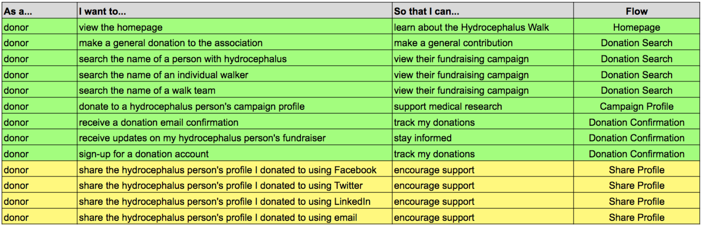

Wander
Hydrocephalus Association Walk
UX Research & Design: streamlined customer checkout experience
UX Research and Design - Neil Ranada
Project time - 3 months
Project location - San Diego, CA
Summary
Have you ever nearly quit or abandoned an online checkout because things didn’t go as smoothly as you’d like? I conducted a study on one of the websites that fall under the Hydrocephalus Association, a well-respected non-profit organization dedicated to education and research to end a rare medical condition.
The goal was to create a streamlined customer checkout experience for donating to medical research.
Problem
Tests of the Hydrocephalus Association (HA) Walk website revealed points where the checkout process was either too long, confusing, or asked too much information.
Hydrocephalus Walk donation page
Click image to enlarge
Solution
Make it clear where someone can start to donate followed by a smooth checkout process broken down into smaller digestible steps.
Discovery
I was inspired to conduct this study for my friend’s daughter, Amiyah, who was born with hydrocephalus. Each year Amiyah’s mom leads a team to participate in the Hydrocephalus Walk held in her city. The event is a combination of online fundraising culminating in a walk event organized by the Hydrocephalus Association.
Amiyah's Hydrocephalus Walk post board. Photo courtesy of the Quinto family.
Hydrocephalus is the buildup of fluid around the brain resulting in an increased pressure in the head. It affects a wide range of people. For every 1,000 babies born in the U.S, one to two will have hydrocephalus. Hydrocephalus is the most common reason for brain surgery in children.
The thought of someone nearly abandoning the donation process because they didn’t have a smooth checkout experience bothered me. I wanted to investigate ways User Experience design could improve the HA Walk website.
Research
I started my research with a survey posted online to various social media platforms and public forums. I asked people general questions about their last donation experience.
Here are my key findings from the 18 responses:
- 83% said the one main reason for donating was to help people
- When asked to select one issue from a list of options people felt could use improvement, “donation process” was one of the top issues
- 83% said they used laptops to browse fundraising websites
Here is a selection of comments from the survey:
- “Often times, the amount of time it takes to log into a website/type in credit card info takes long enough that I get discouraged from donating.”
- “The donation form asked for too much information.”
- “The different types of donation options they offered were confusing and poorly-worded.”
What I learned from survey results
People like to give money to help other people. But unfortunately, some people encounter friction points that leads them to nearly abandoning the donation process.
Finding an opportunity to solve a problem
- Do people experience frustration when trying to donate on the HA Walk website?
- Who is experiencing frustration?
- What do they need to improve their customer checkout experience?
Early User Testing
I began with a click test using Usability Hub giving people the following scenario:
"Your friend’s daughter, Mary, has a medical condition. How would you donate to her fundraiser?"
Open Usability Hub test results in another tabopen_in_new
Of the 15 responses, most people were able to identify the buttons to start the donation process: “Donate to a Walker” and “Give.” However, both of these buttons are misleading. The “Donate to a Walker” button leads to a page that lets you search for a person who is walking in the event to raise funds on behalf of a person with hydrocephalus. The “Give” button leads to a page for making a general donation.
Neither button allows you to search for the person who has hydrocephalus, whom you are ultimately trying to support with the given scenario.
Early Usability Testing
I went further by creating a fundraising account on the HA Walk website to test the search and donation process, with the bonus of making actual contributions.
I conducted a usability test with one person who was interested in donating. I asked the tester to search and donate to a particular person with hydrocephalus. Note: the video recording is not available due to a non-disclosure agreement with the tester.
Here are key observations of the tester:
- Unable to find a fundraising campaign using the name of a person with hydrocephalus
- She felt it took a long time to fill out the payment information form
- Became flustered when she realized that she accidentally subscribed to email notifications after completing the checkout process
- Surprised that clicking the “Continue” button on the payment information page charged her credit card
- Credit card was double-charged after jumping too quickly back to the payment information form after clicking “continue” despite a warning not to do so
With this single tester, it was apparent that there were areas of the customer checkout process that needed improvement. It also reinforced the point from the Usability Hub test result from earlier that there needs to be a way to search for a campaign using the name of a person with hydrocephalus.
User Personas
I identified three people to interview and used them as models to create the User Personas. I focused on learning about their past experiences with donating.
The User Personas represent the varying degrees of relationship a donor can have with a person with hydrocephalus. Often times when people donate, it’s because they know someone who will benefit, whether they are a close family member or an acquaintance.
Open PDF file for User Personas in another tabopen_in_new
Bryan is the primary persona and the focus for the re-design. As an acquaintance, we should ensure his first donation is seamless and pleasant so that he can quickly complete it and hopefully encourage him to support again in the future.
For the initial re-design, we are less concerned about the mother of the person with hydrocephalus and any family friends. They are likely to complete a donation regardless of the difficulty level of the checkout process. However, as secondary personas, they do have goals worth focusing on at a later time.
Top 3 goals of the User Personas
- Be able to choose how they donate. (general donation vs. specific person)
- Easily donate with minimal information required from them.
- Not being confused between the options of donating versus joining a walk team.
I used these three goals as the focus for my design decisions.
Competitive Analysis
I needed to learn from the donation patterns of more well-known websites. I identified three crowdfunding apps: GoFundMe, GiveForward, and JustGiving.
I created matrixes to assess the strengths, weaknesses, opportunities, and threats of each app (SWOT analysis).
View analysis matrixes for other apps in another tabopen_in_new
Top three strengths to include in the design:
- Clear steps on how to donate.
- Simple interface showing donation goal, amount raised, and percentage reached.
- Asking minimal information to complete the checkout process.
Top three weaknesses to avoid in the design:
- Improperly labeled buttons with unclear functions.
- Not giving people a sense of where they are in the donation process.
- Overwhelming people with the amount of information required of them to fill out a form.
Meeting research goals
- Do people experience frustrations when trying to donate on the HA Walk website?
Yes. - Who are the people that need help?
People who want a smooth checkout process like the user personas. - What do they need to improve their customer checkout experience?
A website that allows people to donate with minimal information required easily.
Design
After conducting user research and defining the problem, I was ready to move forward and create design solutions.
User Stories
I created a spreadsheet with a list of tasks to meet the goals of the user personas.
"As a __________, I want to __________ so that I can __________."
Open Google Sheets for User Stories in another tabopen_in_new
User Flows
I created User Flows to visually depict how people completed each task set out in the User Stories.
Donation flow
Open Draw.io for User Flows in another tabopen_in_new
Whiteboard Wireframes
I created whiteboard wireframes to focus on the functionality of the website. I went through each user story and wrote the task in the top left corner of the whiteboard to focus on the particular problem I needed to solve. Below is an example of an early version wireframe solving for the user story:
"As a donor...I want to search a campaign using the name of a person with hydrocephalus...so that I can view their fundraising campaign."
I describe how I refined the search and customer checkout flows under the Testing section.
Visual Design
The HA Walk website is one of many under the main Hydrocephalus Association website. I asked three people if they thought the two looked related. All said that they were not. The colors themes were slightly different which confused people.
Maintaining Branding Consistency
The solution was to reuse the same colors and logo from the main website to reinforce the branding of the Hydrocephalus Association. For typography, I used the same exact body and header fonts used on the main website: Droid Serif and Oswald. I also transferred the logo to complete the style guide.
Style Guide
Open Style Guide in another tabopen_in_new
Mockups
With the style guide, I used Sketch app to create high fidelity mockups to give the website a look and feel consistent with the main website. I also used color contrast to reinforce the functions for each page involved in the donation process.


Testing
I tested early and often during every phase of the design process: wireframes, mockups, and prototype. I took every opportunity to test in person or remotely online to refine my design solutions.
Low-Fidelity Tests
I tested wireframes using click tests and navigation tests posted on UsabilityHub.com.
The first User Story I needed to solve for was:
“As a donor…I want to search the name of a person with hydrocephalus…so that I can view their fundraising campaign.”
The first version of the layout showed that 62.5% successfully click the “Donate” button. However, 37.5% were distracted by either the “Sign In” button or the content in the Walk section:

Homepage layout

Campaign search modal
Open Usability Hub test results in another tabopen_in_new
With these results, I knew that I needed to minimize distractions from getting people to donate. As you will see later in the high-fidelity mockup, I tucked the “Sign In” button away in the navigation menu. I also made the Walk section look less prominent relative to the Donation section while eliminating the “Join Walk” button.
The next part of this flow was the customer checkout process which covers the User Story:
“As a donor, I want to donate to a hydrocephalus person’s campaign so that I can support medical research.”
The layout for the customer checkout was successful with an 81% completion rate on the campaign profile page and 100% completion rate on the modals that followed:

Campaign profile for person with hydrocephalus

Payment Amount modal

Payment Information modal

Payment Confirmation modal
Open Usability Hub test results in another tabopen_in_new
High-Fidelity Tests
Again, I tested people’s ability to search for a campaign to solve for the User Story:
“As a donor…I want to search the name of a person with hydrocephalus…so that I can view their fundraising campaign.”
I saw high success rates while testing high-fidelity mockups which was carried over from the success of the wireframes during the low-fidelity tests:

Homepage with high success rate of testers initiating the search process

Modal asking testers if they want to donate for someone specific

Modal that lets testers search and select a campaign

Campaign search modal with field filled with test scenario girl's name, Mary

Testers successfully donating to the campaign dedicated to a girl named Mary
Open Usability Hub test results in another tabopen_in_new
Next, I tested the customer checkout process to solve for the User Story:
“As a donor, I want to donate to a hydrocephalus person’s campaign so that I can support medical research.”

Testers successfully starting the donation process

Testers were asked to make a $5 one-time donation

Continuing to complete the Payment Amount modal

Completing the Payment Amount modal and moving on to Payment Information

Testers thought the prototype was a real website, skipped filling out the form, and clicked the "Payment Confirmation" button

Completing Payment Information modal and moving on to Payment Confirmation

Payment Confirmation modal with open ended options to see what testers wanted to do next
Open Usability Hub test results in another tabopen_in_new
Success rates for completing each step was greater than 90%. The exception was 40% success rate for the payment information step. Testers said they didn't go through the motions of filling out the form because they didn’t think it was required. They jumped ahead and clicked the “Payment Confirmation” button. I chalked it up to a test-ism and deemed the results an overall success.
Usability Testing
I conducted four usability tests by posting the InVision prototype on UserTesting.com. I came up with three test objectives:
- Can people search for a particular donation campaign?
- Can people easily donate?
- Are people satisfied with the donation process?
I gave testers the scenario and tasks below. As I received feedback from each test, I refined the scenario and tasks to align them with the test objectives better.
Scenario: Your friend created a fundraiser. She is trying to get donations for medical research for her daughter Mary and others like her.
Tasks:
- Take a minute to look at the homepage. What do you think this website is about?
- Donate to the fundraising campaign for a little girl named Mary. Give a $5 one-time donation. (your real information is not required for filling out forms)
- How do you feel about the smoothness of the checkout process? Do you feel the checkout process was trustworthy?
Usability Test #1 Results
- Felt the website design was trustworthy in general
- It took a few seconds to discover clicking the “Donate” button would lead him down the path of finding a fundraising campaign for a particular person
- Completed the checkout process with ease
- “Clean looking design of a website…the biggest thing was donating. It was painless to look for the character Mary and donate to her.”
Press play above or watch video in another tabopen_in_new
Usability Test #2 Results
- Unsure of how legitimate the homepage looks
- “If you’re having a walk on a website, you want to make sure there’s information about the organization itself…I’d want to make sure they're focusing on the kind of credibility and making sure their money is going to the right place.”
- Easily searched and found fundraising campaign for the little girl in the scenario
- Expected to be able to donate to the little girl immediately after the search results and not be redirected to another page asking the tester to donate again
- Easily completed the checkout process with no issues
Press play above or watch video in another tabopen_in_new
Usability Test #3 Results
- Did not use the search bar to find the campaign for the little girl in the scenario - opted to click around and browse
- Initially tried to select the campaign for a different girl but eventually found the right one
- Quickly completed the checkout process
- “I think this is pretty smooth and also it’s very trustworthy...”
Press play above or watch video in another tabopen_in_new
Usability Test #4 Results
- No issues searching and selecting the fundraising campaign for the little girl in the scenario
- Easily navigated the customer checkout modal and at one point jumped back a step to check that one of the form fields was used to enter CVC
- “Generally, if a website is not accepting PayPal I don’t really consider it trustworthy…I exclusively go through PayPal because it adds another layer of protection.”
- “…the payment process was extremely smooth. I didn’t have to go through any unnecessary steps.”
- Said he had no issues on the smoothness of the payment process
- Mentioned the process might be too simplistic “which is good...but also kind of psychologically, when looking into putting actual money it might be nice to have a little bit extra there to give people some confidence…”
Press play above or watch video in another tabopen_in_new
Going back to answering the test objects:
- Can people search for a particular donation campaign?
Yes, once clicking the “Donate” button testers were able to search and select the campaign specifically for the girl in the scenario. - Can people easily donate?
Yes, all testers were able to complete the customer checkout process smoothly. - Are people satisfied with the donation process?
In general, testers were pleased with how easy it was to donate. However, one tester mentioned that he preferred to use PayPal because he felt it added an extra layer of security. Based on this feedback, I added PayPal as a payment option.
Prototype
Open Prototype and try out the usability tasks in the section above.open_in_new
I used InVision to create a prototype with mockups imported from Sketch app. You can open it in another tab and try the scenario and tasks found in the Usability Testing section above.

Conclusion
I was able to create a streamlined checkout process for people to donate to a particular campaign.
What surprised me the most was the varying views on how trustworthy the website looked overall. The trustworthiness of a website is always worth improving.
If given more time, I would have liked the opportunity to work with the business, design, and development teams of the Hydrocephalus Association website. I focused my study on the customer checkout process for making donations. However, there are many other aspects of the existing website that one could examine under the lens of User Experience design such as: joining a Walk Team, individual campaign drives of walkers, incentive prizes, and much more.
The Hydrocephalus Association is doing incredible research to end hydrocephalus. You can learn more at the main Hydrocephalus Association website.
You also donate and find a walk event in a city near you through the Walk Schedule.